Ресторан
Grey Stone
Софіївська Борщагівка. Повноцінний ресторан з нуля.
- планування
- проєкт
- ремонт
- обладнання
- навчання персоналу
Без франшизи й роялті. Шеф сам пише меню, ставить кухню й навчає команду — від бізнес-плану й приміщення до першої зміни. Заклад і бренд — ваші.
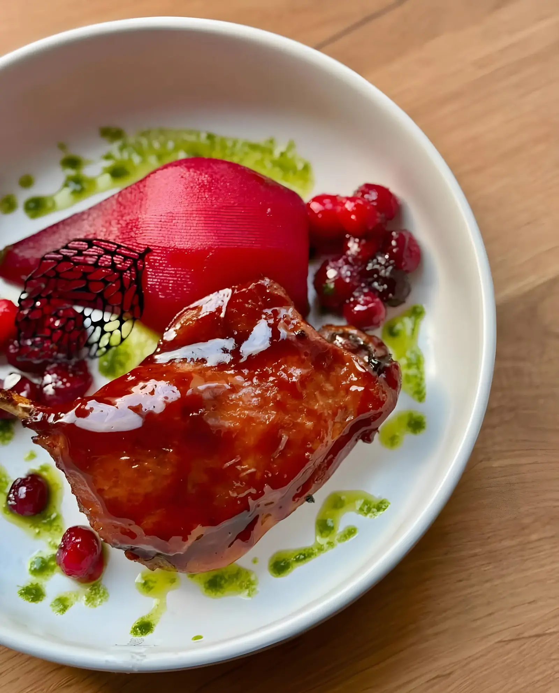
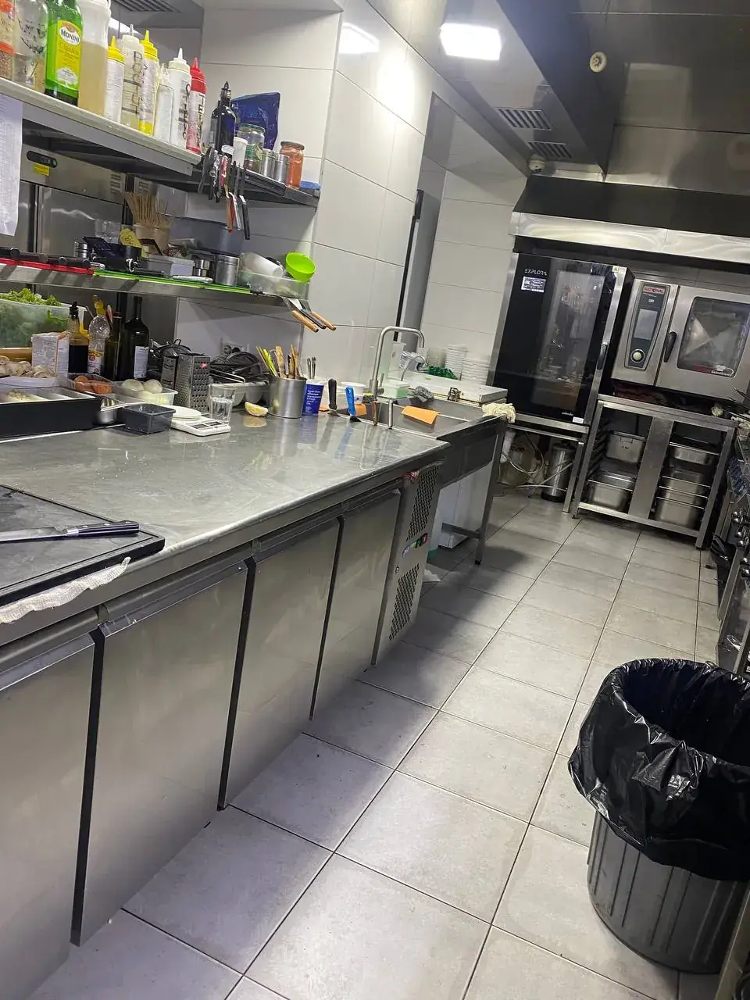
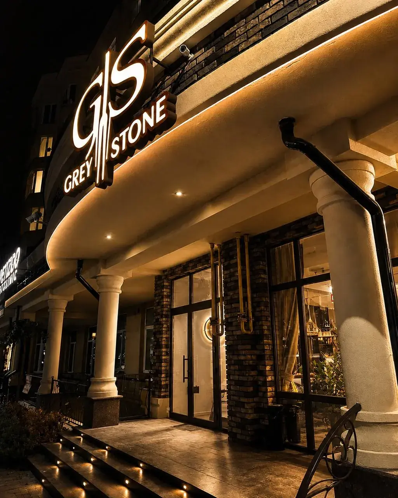
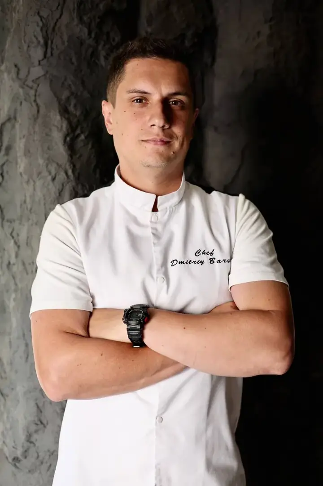
Дмитро Барсукбренд-шеф · з 2012 · 20+ закладівЯкщо пас працює — працює весь заклад: кухня встигає, зал усміхається, каса рахує. Ми будуємо ваш заклад саме з цього місця.
Дмитро керує діючим рестораном, який сам відкрив з нуля, — він успішно працює вже два роки. Тому знає, де заклад втрачає гроші, ще до того, як ви підпишете оренду.
Ми ведемо запуск від ідеї до відкритих дверей: рахуємо, будуємо, пишемо меню, навчаємо команду — і відчиняємо.
Більшість закладів «прогорають» не через смак, а через рішення до відкриття. Шеф закреслює їх ще на етапі розрахунку.
Спочатку орендують приміщення, а потім думають, що в ньому відкрити
Спершу аналіз локації й аудиторії — потім формат і договір оренди
Купують обладнання «на око»: зайве простоює, потрібного бракує
Обладнання підбираємо під техкарти й реальну кількість гостей
Меню смачне, але без собівартості — страви не заробляють
Кожна страва з техкартою і порахованою собівартістю
Цех, де кухарі заважають один одному, і черга на пасі
Плануємо кухню так, щоб страва йшла до пасу без зайвих кроків
Команда вчиться на перших гостях — і збирає перші погані відгуки
Навчаємо кухню й зал до відкриття, проводимо пробні зміни
Відкрились — і залишились із проблемами самі
Місяць поруч після відкриття, поки процеси не запрацюють без нас
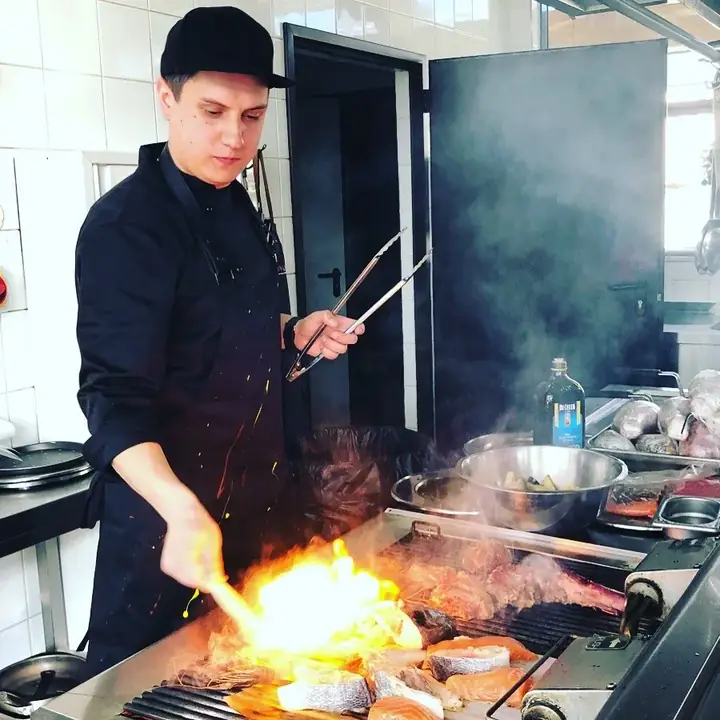
«Я відкриваю заклад не заради відкриття, а заради репутації. І з великою душею — бо люблю те, що роблю.»— Дмитро Барсук
Софіївська Борщагівка. Повноцінний ресторан з нуля.
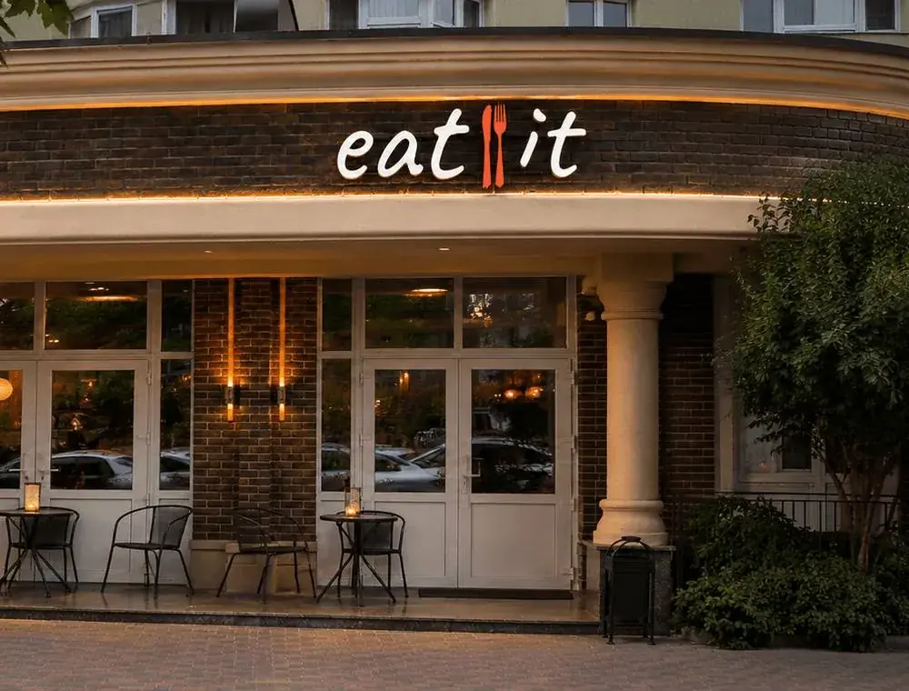
Заклад при ЖКМолодіжний формат у житловому комплексі.
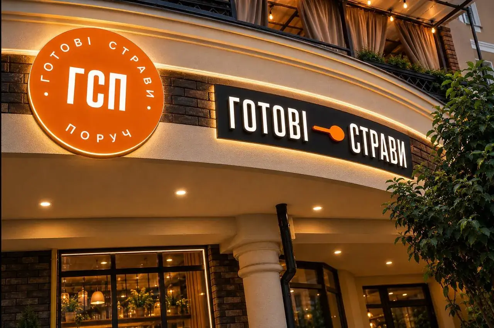
КулінаріяКорисні домашні страви щодня.
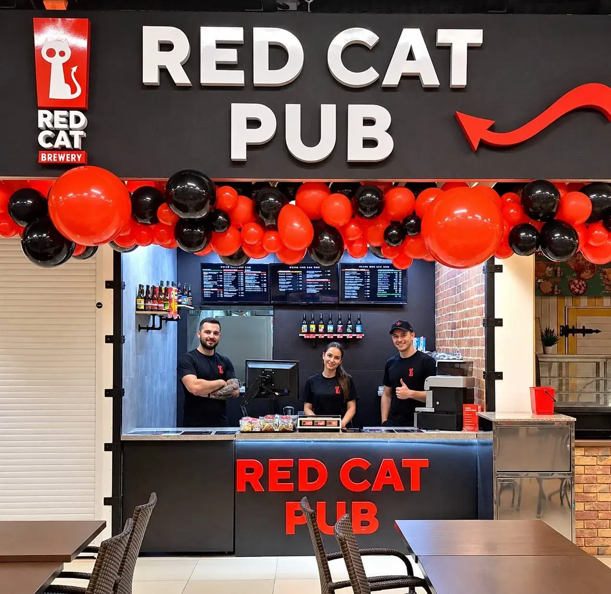
Паби · 3 точкиХарків: ТРЦ «Французький бульвар», вул. Сумська, ХТЗ.
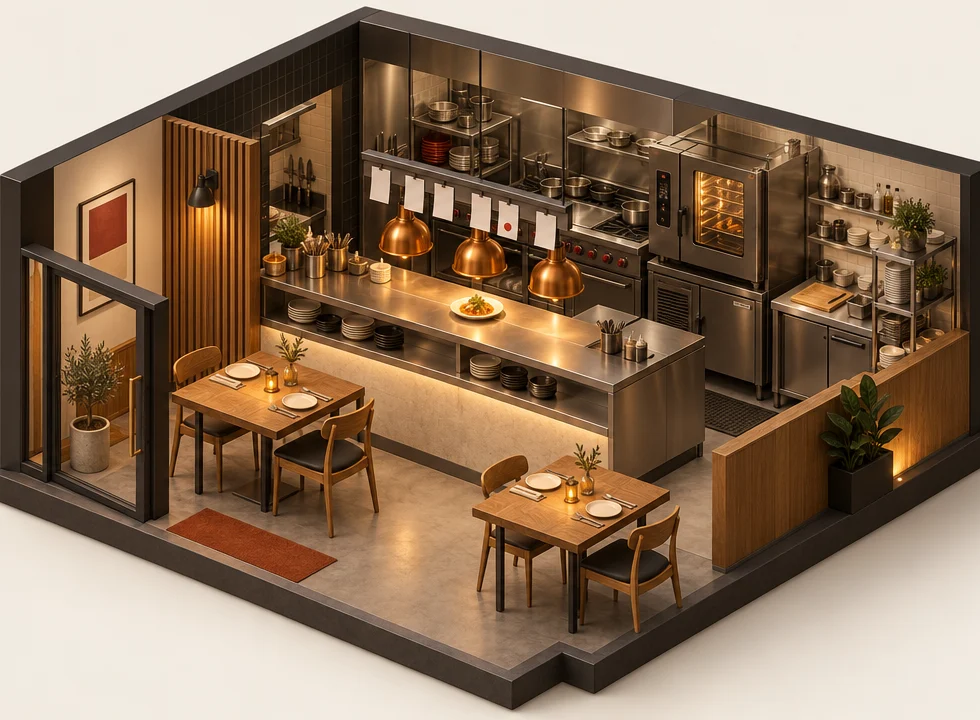
05 — наступнийескіз · ваш заклад20+ закладів уже приймають гостей. Наступний — ваш: розкажіть ідею, і Дмитро порахує, скільки коштує відкриття.
Порахувати мій закладПорожнє приміщення, обладнання в плівці, техкарти на столі — так виглядає заклад за кілька днів до запуску. Ми розставляємо цех так, щоб страва йшла до пасу без зайвих кроків.
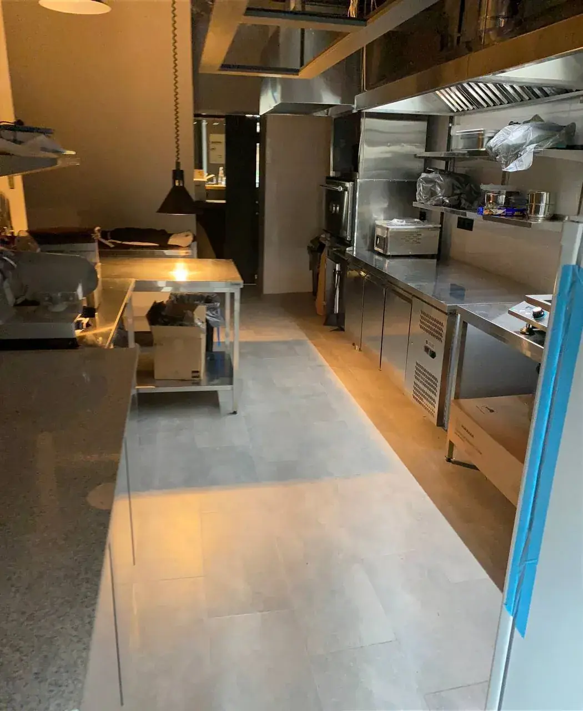
Беремося за нові заклади, перезапуск і ребрендинг діючих, а також окремі задачі — наприклад, лише нове меню кухні.
Кожен етап — як замовлення на пасі: зрозуміло, хто що робить і коли буде готово.
Знайомимось, слухаємо ідею, дивимось приміщення або обговорюємо пошук.
безкоштовноФормат, аудиторія, локація: що спрацює саме у вашому місті.
1–2 зустрічіПервинний бюджет відкриття й вартість наших послуг.
цифри до договоруФіксуємо обсяг робіт, етапи й терміни.
прозороРемонт, кухня, меню, команда, документи, каса.
1,5–3 місяціПерша зміна — і ще місяць ми поруч, доводимо процеси.
супровід 1 місДмитро поставить чотири питання, як на першій зустрічі. З кожною відповіддю поруч друкується чек: вартість послуг під ключ і середні інвестиції у відкриття.
ФорматСтрітфуд
Площадо 20 м²
Приміщеннявже є
Старт—
Термін1,5–3 міс
Супровід1 міс після відкриття
Інвестиції у відкриття$10 000 – 18 000
Послуги «Пас»$2 800
* Попередньо. Точний прорахунок — індивідуально, після першої зустрічі. Передати чек шефуФраншиза продає готові правила і бере відсоток назавжди. Ми будуємо ваш власний заклад і віддаємо ключі.
Вхідпаушальний внесок за чужий бренд
Щомісяцяроялті з виручки — поки працюєте
Брендне ваш, за договором
Менюяк скаже мережа
Постачальникилише погоджені мережею
Вхідразова оплата послуг — від $2 800
Щомісяця0% — уся виручка ваша
Брендваш назавжди
Менюшеф пише під ваш формат і гостя
Постачальникиваші, наші або разом — на вибір
Неважливо, чи це ваш перший заклад, чи п’ятий — шлях один: ідея, цифри, кухня, гості.
Хочете свій заклад і запустити його без помилок, які коштують тисячі доларів.
Є капітал і бажання — беремо на себе всю кухню, в прямому сенсі.
Підкажемо, який формат окупиться саме тут, і відкриємо його.
Перезапуск, ребрендинг або нове меню кухні, якщо заклад не приносить прибутку.
Від 1,5 до 3 місяців. Якщо проєкт великий і глобальний — довше, терміни фіксуємо в договорі.
Так. Аналізуємо локацію й аудиторію і підбираємо формат під ваше приміщення. Якщо приміщення немає — знайдемо й прорахуємо.
Як вам зручніше: можемо підібрати все самі, працювати з вашими постачальниками або поєднати.
Так, окремі послуги доступні: наприклад, нове меню кухні з техкартами або перезапуск діючого закладу.
Ще місяць ми поруч: доводимо процеси на кухні й у залі, допомагаємо команді працювати без нас.
Працюємо по всій Україні — вже відкривали заклади від Харкова до Кіровоградської області.
Послуги під ключ — від $2 800 (до 20 м²) до $4 800 (60–80 м²). Середні інвестиції у сам заклад — від $10 000 до $65 000 залежно від площі. Точна сума — після першої зустрічі.
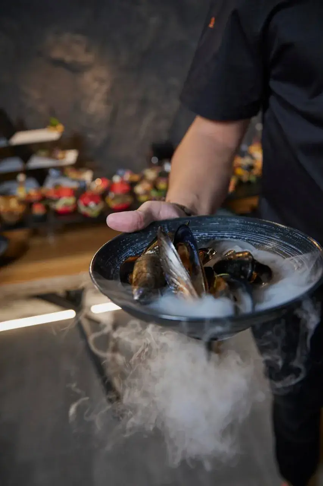
Розкажіть ідею: формат, місто, площу. Дмитро зв’яжеться, обговорить її й зробить первинний прорахунок.